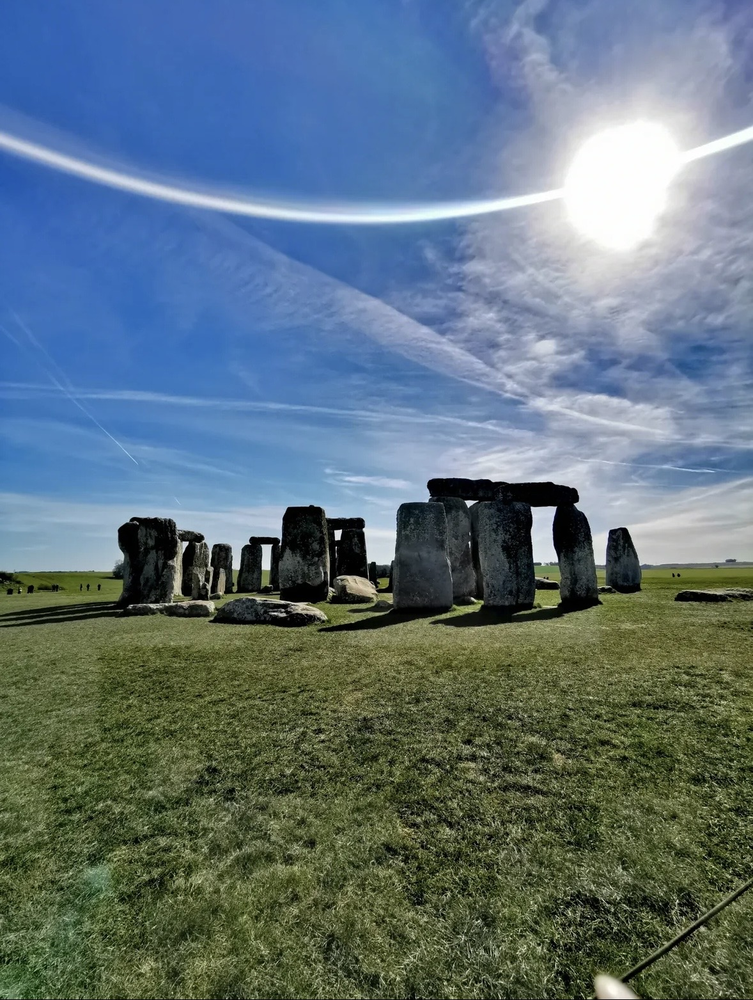

The Stonehenge site preserves human activity from 8500–7000 BC. The first major monument here, a circular earthwork enclosure, was laid out around 3000 BC. Later construction drew material from far beyond Wessex, including bluestones from southwest Wales and the Altar Stone from northeast Scotland. Its principal axis was aligned to the solstices, binding the monument to a recurring astronomical order. Evidence from the wider Stonehenge landscape suggests that it also served as a point of assembly, attracting people from multiple regions. My guide remarked, with some understatement, that these were “not stupid people.” Stonehenge shows a society capable of invention and cooperation. On the same day, my co-author texted me that Sharif University of Technology in Tehran had been hit in the latest strikes.